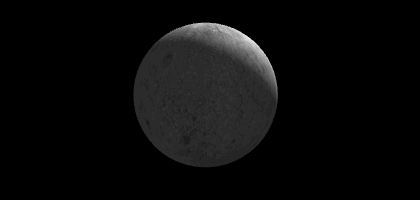

效果如图15。

图15
var textureFlag = [0, 0];
var startTick = false;
var waitTick;
function webGLStart()
{
//...
waitTexture = setInterval("tick()", 100);
}
function tick()
{
if(textureFlag[0] == 1 && textureFlag[1] == 1)
{
startTick = true;
textureFlag[0] = 2;
textureFlag[1] = 2;
clearInterval(waitTexture);
}
if(startTick)
{
requestAnimFrame(tick);
drawScene();
animate();
}
}
这次让板条箱和月亮围着一个中心点旋转，需要加载两个纹理，加载速度慢的话那个关于texture的WARNING就又回来了。为了确保纹理加载完之后再tick()，增加了三个标记和一个定时器。代码逻辑还好理解，用setInterval轮询纹理是否加载完毕而不用while，是因为while执行太快了，会卡的，100ms询问一次就可以了。textureFlag在分别在两个纹理加载完成的时候变为true。
var lastTime = 0;
function animate()
{
var timeNow = new Date().getTime();
if(lastTime != 0)
{
var elapsed = timeNow - lastTime;
moonAngle += 0.05 * elapsed;
cubeAngle += 0.05 * elapsed;
}
lastTime = timeNow;
}
要让它们旋转，animate自然要放回来的。
function drawScene()
{
//...
var lighting = $("#lighting").is(":checked");
gl.uniform1i(shaderProgram.useLightingUniform, lighting);
if(lighting)
{
gl.uniform3f(
shaderProgram.ambientColorUniform,
parseFloat($("#ambientR").val()),
parseFloat($("#ambientG").val()),
parseFloat($("#ambientB").val())
);
gl.uniform3f(
shaderProgram.pointLightingLocationUniform,
parseFloat($("#lightPositionX").val()),
parseFloat($("#lightPositionY").val()),
parseFloat($("#lightPositionZ").val())
);
gl.uniform3f(
shaderProgram.pointLightingColorUniform,
parseFloat($("#pointR").val()),
parseFloat($("#pointG").val()),
parseFloat($("#pointB").val())
);
}
点光源的参数还是和之前类似方法用uniform给出。
mat4.identity(mvMatrix);
mat4.translate(mvMatrix, mvMatrix, [0, 0, -20]);
mvPushMatrix();
mat4.rotate(mvMatrix, mvMatrix, degToRad(moonAngle), [0, 1, 0]);
mat4.translate(mvMatrix, mvMatrix, [5, 0, 0]);
//...绘制月亮，和之前绘制月亮一样。
mvPopMatrix();
mvPushMatrix();
mat4.rotate(mvMatrix, mvMatrix, degToRad(cubeAngle), [0, 1, 0]);
mat4.translate(mvMatrix, mvMatrix, [5, 0, 0]);
//...绘制板条箱，和前面绘制板条箱一样。
}
利用mvPopMatrix()和mvPushMatrix()，就把月亮的绘制和板条箱的绘制独立开来，都从原点平移相同距离，再旋转不同角度。
<script id = "shader-vs" type = "x-shader/x-vertex">
//...
uniform vec3 uPointLightingLocation;
uniform vec3 uPointLightingColor;
void main(void)
{
vec4 mvPosition = uMVMatrix * vec4(aVertexPosition, 1.0);
gl_Position = uPMatrix * mvPosition;
vTextureCoord = aTextureCoord;
if (!uUseLighting)
{
vLightWeighting = vec3(1.0, 1.0, 1.0);
}
else
{
vec3 lightDirection =
normalize(uPointLightingLocation - mvPosition.xyz);
vec3 transformedNormal = uNMatrix * aVertexNormal;
float directionalLightWeighting =
max(dot(transformedNormal, lightDirection), 0.0);
vLightWeighting =
uAmbientColor + uPointLightingColor * directionalLightWeighting;
}
}
</script>
点光源照来的光，与相同方向照来的平行光是没有两样的，利用当前计算的点移动到的位置mvPosition，和点光源的位置uPointLightingLocation，就算出了点光源照到该点的方向，而这个方向向量就可以和前面章节计算方向光效果一样方法使用了。于是在计算gl_Position的时候，与之前不同地分了两步，先计算了mvPosition。
好了，我们有了点光源。